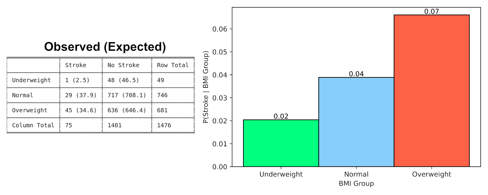
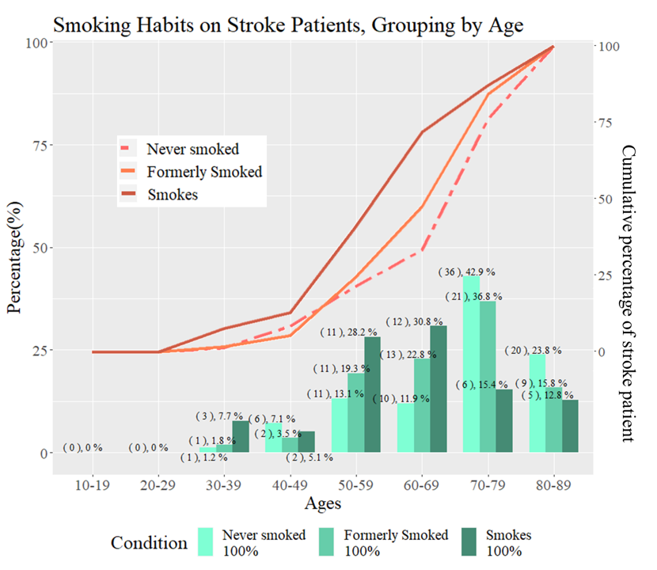
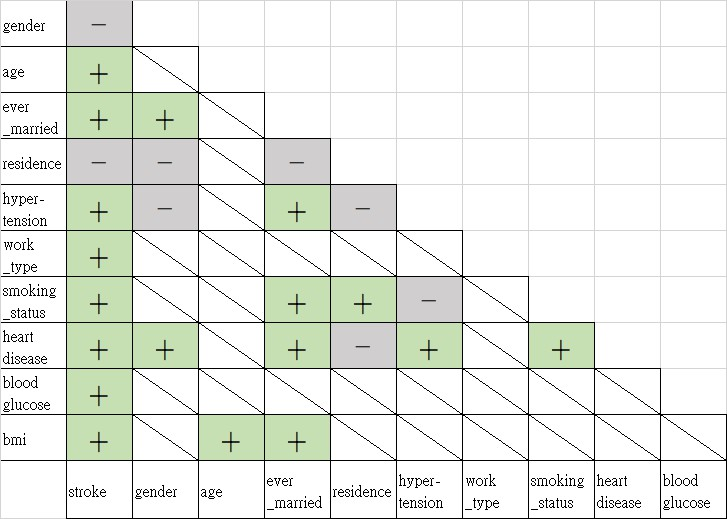

Cover Page¶
$\(\int_0^\infty \frac{x^3}{e^x-1}\,dx = \frac{\pi^4}{15}\)$
Chapter 1: 背景與動機¶
背景¶
隨著年齡增長，罹患腦中風、缺血性心臟病與癌症的風險也越高，亦為1990年以來WHO統計已開發國家的前三大死因[18b]，2016年全球的中風病患高達八千萬人，其中近一千四百萬人為新增病例，同年有550萬人死於中風，為全球第二大死因[JNR+19]，其中75%來自、低收入國家[Col18]，過去十年來(4/6止，衛服部公布至2019，每年國人十大死因)一直列在臺灣國人十大死因的前五名[18a,20]。
中風、或是腦中風(stroke, cerebrovasular accident)，在衛生福利部上，我們又可以看到另一個稱呼「腦血管疾病」。當腦部血管受到阻塞或破裂，腦部細胞欠缺血液的運輸而導致缺氧，細胞進而損傷或死亡，便稱之為腦中風[JOOS16]。罹患中風後，可能需要面對許多併發症，包含肌肉能力喪失，部分癱瘓、吞嚥困難，中樞神經系統大腦上則有記憶喪失、思覺異常、癲癇等等[LSR+00,KSC10]，其中又有1/3的患者在癒後仍會伴隨這些後遺症[Org21]。
除了高死亡率，國家亦需要付出大量的醫療成本，對中風患者進行治療與病後照護，近數十年，腦中風對於全球各國均是不可忽視的問題。
Chapter 2: 資料集基本介紹¶
資料來源¶
我們選擇了一筆2018年釋出的網路資料
資料清理¶
我們將符合以下條件的資料清掉
Gender為Other
BMI為N/A
Smoking status為Unknown
資料基本型態¶
資料總數: 3425個人 (清理前為5110)
類別型: gender, hypertension, heart_disease, ever_married, work_type, Residence_type, smoking_status, stroke
數值型: age, avg_glucose_level, bmi

其他變數分佈¶

Chapter 3: 列聯表分析1-簡單類別型¶
列聯表分析的第一部份，會針對五個簡單類別變數做Two-by-two table的分析。簡單類別型變數只有兩個值，例如: 有高血壓就是1，沒高血壓就是0，也因此Two-by-two table跟Odds Ratio適合分析這種變數與中風的關係。
A. 中風與性別¶

Odds Ratio:¶
\(\hat{\theta}=1.119\)
95% Confidence Interval of \(\log{(\hat{\theta})}=(-0.192, 0.417)\)
上面的信賴區間包含0，表示對於性別與中風，未有證據支持具有相關性
雖然相關沒有統計顯著，但由上方的Bar圖，可以知道在這組資料中，如果已知是男生，那中風的機率是稍微高一點的
B. 中風與居住環境¶

Two-by-two table¶
Odds Ratio:¶
\(\hat{\theta}=0.948\)
95% Confidence Interval of \(\log{(\hat{\theta})}=(-0.354, 0.247)\)
95%的信賴區間包含0，表示住在城市與鄉下與中風並無相關性
由上方的Bar圖的條件機率，也顯示住在城市與鄉下得到中風的機率是類似的
C. 中風與高血壓¶

Two-by-two table¶

Odds Ratio:¶
\(\hat{\theta}=3.821\)
95% Confidence Interval of \(\log{(\hat{\theta})}=(1.007, 1.673)\)
95%的信賴區間不包含0，表示 \(\log{(\hat{\theta})}\) 與0有顯著差異
表示中風與高血壓是顯著相關的
由上方Bar圖，在高血壓患者中，中風的機率是0.14。然而，在非高血壓的人中，中風的機率是0.04。可以知道，有高血壓的人比沒有高血壓的人容易中風。
Chi-square:¶
\(\chi^2\) = 81.605, df = 1, p-value < 2.2e-16
高血壓與中風的在本檢定中顯示具有高度相關性，如同odds ratio所顯示，進一步分析殘差了解其分布：
>round(result_StrokeHyper$residuals, 3)
hypertension |
Normal |
|
|---|---|---|
Stroke |
8.472 |
-2.784 |
Non-stroke |
-1.917 |
0.630 |
高血壓與中風的發生有高度相關性，殘差顯示血壓正常者與高血壓者在中風條件下有最大的差異
D. 中風與心臟病¶

Two-by-two table¶

Odds Ratio:¶
\(\hat{\theta}=4.522\)
95% Confidence Interval of \(\log{(\hat{\theta})}=(1.112, 1.905)\)
95%的信賴區間不包含0，表示 \(\log{(\hat{\theta})}\) 與0有顯著差異。
表示中風與心臟病是顯著相關的
由上方Bar圖，在心臟病患者中，中風的機率是0.175。然而，在非心臟病患者中，中風的機率是0.045。可以知道，有心臟病的人比沒有心臟病的人容易中風。
Chi-square:¶
\(\chi^2\) = 90.26, df = 1, p-value < 2.2e-16
心臟病與中風的在本檢定中顯示具有高度相關性，如同odds ratio所顯示，進一步分析殘差瞭解其分布：
>round(result_StrokeHD$residuals, 3)
heart D |
Normal |
|
|---|---|---|
Stroke |
9.149 |
-2.186 |
Non-stroke |
-2.071 |
0.495 |
心臟病與中風的發生有高度相關性，殘差與\(\chi^2\): 顯示心臟病患者與中風的關聯性甚至比高血壓之於中風要高。
E. 中風與婚姻¶

Two-by-two table¶

Odds Ratio:¶
\(\hat{\theta}=2.644\)
95% Confidence Interval of \(\log{(\hat{\theta})}=(0.501, 1.444)\)
95%的信賴區間不包含0，表示 \(\log{(\hat{\theta})}\) 與0有顯著差異。
表示中風與婚姻狀態是顯著相關的
我們一開始認為婚姻不應該跟中風有關聯，上方Bar圖告訴我們有結過婚的人比較容易中風
在後續的分析，我們會發現婚姻帶有年齡的資訊。換句話說，婚姻與中風關聯背後的Confounding factor是年齡
Chi-square:¶
\(\chi^2\) = 21.4, df = 1, p-value = 3.728e-06
婚姻經驗與中風的在本檢定中顯示具有相關性，如同odds ratio所顯示，進一步分析殘差瞭解其分布：
round(result_StrokeMarri$residuals, 3)
Married |
NevMar |
|
|---|---|---|
Stroke |
2.201 |
-4.004 |
Non-stroke |
-0.539 |
0.980 |
發現未曾有婚姻經驗者，較不容易中風
綜合比較¶

我們把這五個簡單變數的Odds Ratio 畫在一起做比較，如上圖。
與中風不相關的變數: 性別與居住地
與中風相關的三個變數: 婚姻、高血壓、心臟病
婚姻與中風相關是比較意外的結果，下面會做年齡與婚姻相關的分析，就可以知道婚姻是帶有年齡的資訊的。
Chapter 4: 列聯表分析2-多重類別型¶
在列聯表分析的第二部份，主要是探討兩個類別型變數，抽煙狀態與工作。這兩個變數都含有兩個以上的類別。下面主要使用的統計方法為卡方檢定。
A. 中風與抽煙習慣¶

Contingency table¶
Chi-square:¶
\(\chi^2\) = 6.03, df=2, p-value=4.906e-02
p-value\(<\)0.05，顯示抽煙狀態與中風具有高度相關性
由Contingency Table的期望值可以發現，造成統計顯著性的是”Never smoke”與”Formerly Smoke”
Never Smoke的觀測值比期望值低，表示不抽煙者中風的機率較低
Formerly Smoke的觀測值比期望值高，表示戒煙者中風的機率提高
Bar圖也指出，Formerly Smoke的中風機率是最高的。這個結果讓我們懷疑戒煙者是不是也隱含著年齡比較大的資訊，這在後續的分析會一併討論
B. 中風與工作¶
工作的分佈與比例¶
在這筆資料中，私人企業工作佔了64%，self-employed的人佔了18%，政府機關工作的人佔了15%，剩下的則是不曾工作者與小孩
我們會在下面的Contigency Table跟卡方分析把”孩童”與”未曾工作”的資料點清理掉
Contingency table¶
Chi-square:¶
\(\chi^2\) = 7.87, df=2, p-value=1.959e-02
p-value \(<\) 0.05，顯示工作與中風具有高度相關性
在私人企業與政府單位工作的人的中風觀測值都比中風期望值低。然而，對於自己開業的人，中風的觀測值比期望值高。從右方條件機率的Bar圖也顯示自己開業的人中風的機率最高
我們猜測背後的原因是，自行創業的壓力比領人薪水的壓力大，以致於中風的機率高
Chapter 5: 列聯表分析3-數值型¶
在第三部份，我們把數值型的三種變數想辦法分類，以便做出列聯表。再利用列聯表做卡方檢定跟算出條件機率。
A. 中風與年齡¶
在這部份的分析，我們用10歲當間距，把年齡歸成8個分類(10-20,20-30,…,80-90)

Contigency Table¶

從上方表格發現，10-20與20-30歲的人都屬於非中風族群。因此，為了做卡方分析，我們會把10-20,20-30,30-40,40-50合併成一組
從上方條件機率Bar圖來看，中風的機率顯然是隨著年齡而增加
Contigency Table(合併組別後)¶

Chi-square:¶
\(\chi^2\) = 242.12, df=4, p-value=3.243e-51
p-value \(<\) 0.05，顯示年齡與中風具有高度相關性
觀測值與期望值的差別、條件機率Bar圖都指出，年齡愈大，中風機率愈高
B. 中風與血糖¶
血糖的分佈¶
註: 雖然不確定收集資料時是取飯前(FPG)或是飯後血糖(OGTT)，本報告仍先採用空腹血糖做為參考標準。

可以看到血糖的分佈呈現雙峰，左邊高峰與正常血糖範圍(80-110)交疊，而右邊的高峰是血糖過高的區域

Chi-square:¶
\(\chi^2\) = 79.24, df=3, p-value=4.478e-17
p-value \(<\) 0.05，顯示血糖與中風具有高度相關性
由條件機率可以發現，血糖小於160對於中風的機率都差不多
血糖大於160的組別，中風的機率特別高。對照上面的分佈圖，右邊高血糖的族群就是容易中風的族群
C. 中風與BMI¶
BMI的分佈¶

首先，我們把BMI分成三類，18.5與25這兩個數值是分類的切點，如上圖
由上面的分佈圖大概可以知道，這組資料集大部分的人是過胖的

這組資料是麥肯錫這間美國企業舉辦活動釋出的，因此我們比較了一下這組資料BMI與美國十萬個成人的BMI分佈，最後還找了台灣人的分佈
由上圖，這組資料集的確是比較符合美國人的分佈，甚至胖上許多。所以拿這組資料研究中風可能就有偏差，因為大部份人是過胖的
Contigency Table¶
因為Underweight-stroke那一欄是1，表示這樣的分組不適合做卡方，因此在這裡我們就只看條件機率
由條件機率可以發現，過胖的人，中風機率是比較高的
討論: 過輕族群的唯一一個中風者¶
我們把過輕族群唯一一個中風者的資料抓出來看
她是: 81歲女性，沒有高血壓，沒有心臟病，有結婚，自營事業者，住在鄉村，血糖82，不曾抽煙
由上面所有的分析，她只俱備年紀大這個風險因素，所以我們推測以下種可能
年紀大，容易中風
她可能基因上有中風因子
可能因為中風，生病後才變瘦的
Chapter 6: “中風組內分佈”與”非中風組內分佈”¶
在這個部份，我們把資料分成中風者與非中風者，然後計算不同變數的條件機率
A. 年齡¶
下圖中，淡藍色Bar 代表的是 \(P(\text{Age Group}~|~\text{Stroke})\)
深藍色Bar 代表的是 \(P(\text{Age Group}~|~\text{Non-Stroke})\)
文字註解中，括號代表的是實際的人數
非中風族群的年齡分佈就跟這組資料的分佈差不多
在中風族群中，可以看到過了50歲，人數就急遽攀升，直到70-79歲達到高峰。表示中風者裏面都是年歲比較大的人
B. 血糖¶
相較於列聯表的分析，我們在這裡把血糖做比較細的分類，分成7群

上圖中，淡藍色Bar 代表的是 \(P(\text{Glucose Group}~|~\text{Stroke})\)
深藍色Bar 代表的是 \(P(\text{Glucose Group}~|~\text{Non-Stroke})\)
pre-DM:糖尿病前期, DM: 糖尿病
首先，非中風者的分佈是雙峰，中風者的分佈也是雙峰。加總起來，如之前看到的，也是雙峰。
非中風族群裏面，左邊的高峰是正常血糖的人，佔了七成(29.8%+41.1%)。右邊的峰，就相對的矮多了，大約是15%(4.5%+8.7%)。
在中風族群中，左邊的高峰是正常血糖的人，佔了大約五成(23.9%+26.1%)。右邊的高峰，大約是35%。表示中風患者，高血糖的比例的確是提升了。

由於做了更細的分類，我們再一次的呈現反向的條件機率
上圖中，橘色Bar 代表的是 \(P(\text{Stroke}~|~\text{Glucose Group})\)
棕色Bar 代表的是 \(P(\text{Non-Stroke}~|~\text{Glucose Group})\)
血糖80-160的族群中，中風的比例差不多，大約都是4%。血糖過了兩百，中風的比例就開始提升，可以看到血糖超高族群，中風與非中風患者的比例是1:3
C. BMI¶
相較於列聯表的分析，我們在這裡把BMI做比較細的分類，分成6群
上圖中，淡藍色Bar 代表的是 \(P(\text{BMI Group}~|~\text{Stroke})\)
深藍色Bar 代表的是 \(P(\text{BMI Group}~|~\text{Non-Stroke})\)
中風族群裡，正常BMI跟微胖的人大約佔了27%，27\(<\)BMI\(<\)35 的人大約佔了50%
非中風族群裡，正常BMI跟微胖的人大約佔了34%，27\(<\)BMI\(<\)35 的人大約佔了42%
中風族群裡BMI>35的比例與非中風族群裡>35的比例是差不多的，都是21%
由於做了更細的分類，我們再一次的呈現反向的條件機率
上圖中，橘色Bar 代表的是 \(P(\text{Stroke}~|~\text{BMI Group})\)
棕色Bar 代表的是 \(P(\text{Non-Stroke}~|~\text{BMI Group})\)
BMI過了27之後，中風的比例有些微提升，但在非常肥胖的組別(30-35,35-)並沒有特別顯著的提升
Chapter 7: Age as Confounding Factor¶
Age and Gender¶

barplot的部分是該年齡層某個性別的中風百分比 lineplot的部分是該性別的中風人數中每加一個年齡層的百分比
性別會對年齡和中風的機率構成影響，美國平均女性更年期是50~52歲，因此可見從50~69該區段的斜率較先前趨緩，而男性過了50歲到79歲這段區間幾乎呈現斜率一致，顯示男性邁入老年後除非已過80，年齡對中風造成的差異一致，然女性可能因為賀爾蒙波動等因素造成每個年齡區段罹患中風的機率不斷波動
Age and hypertension¶
對於未有高血壓的病患，在老年以前對於罹患中風的正影響較低，顯示累積機率之斜率較低。值得注意的是在50歲以前，未有高血壓者罹患中風的比例較高，但過了50歲之後由累積機率的上升斜率可見，50~69歲高血壓對於罹患中風的正影響較為明顯，然過了70歲之後，本表未見高血壓對於中風的是否有影響。
Age and Herat-Disease¶
同時具有心臟疾病與中風的人數有36人，不確定是否會影響判讀，但就上圖，年齡對中風與否的影響，有一部份取決於是否有心臟疾病，未有心臟疾病者，年齡的影響較大。但對於有先心臟疾病者，一旦過了更年期(50歲)之後，右表中的橘色實線的斜率變化顯示，年齡增長對於罹患中風未見其正向影響。
Age and Marry¶

未有婚姻經驗的人總共826人，但其中中風的僅有20人。換句話說，\(P(\text{Stroke}|\text{Never Marry})=0.02\)，這會讓模型本身看到未婚者，就容易猜沒中風。中風者裡未婚者過少的這件事情，可能是讓婚姻成為重要解釋變數的主要原因。
淺綠色Bar代表\(P(\text{Stroke}|\text{Marry},\text{Age-Group})\)，粉紅色Bar代表\(P(\text{Stroke}|\text{Never Marry},\text{Age-Group})\)
單純看這張圖60-79、70-79的區段，其實”老、未婚的人”罹患中風的比例是比”老、結婚的人”罹患中風的比例還高的。
但認真把count看清楚，會發現，90%的中風者都是已婚，而且這群已婚又中風的人大部份都是大於五十歲的。因此，在之後的模型，結婚這件事情對於中風，其實是隱含年紀大的資訊的。
Age and Smoking Status¶
三組均大於39人。
對於維持抽菸習慣者，觀察右表斜率，年齡之於中風的影響大致可分為三個階段，壯年、(50歲)更年期後十年、邁入老年70歲以後。壯年時期維持抽菸的人口不多，不確定是否具有意義，但可以發現50歲以後之抽菸者，到七十歲以前這段區間若具有抽菸習慣對於罹患中風具有正向影響。然而值得注意的是，雖然在卡方檢定中，我們發現曾經有過抽菸習慣的成功戒菸者們，罹患中風的機會較高，但是本表中可以發現對於60多歲跳到70歲這個階級中，無論是成功戒菸者或是有抽菸習慣者，年齡均會影響其抽菸習慣增加中風機會，兩組斜率均出現變動，因此不排除在卡方檢定中的結果，有受到年齡因素的干擾。原先認為已經成功戒菸者可能菸齡已久，故引導出卡方檢定的結果，然而，目前可得的資料僅能得知平均戒菸年齡，約在40歲以前，又本資料中小於40歲的中風人數過少，故而不在本份報告得以解釋的範圍內。

{kind=link}
{kind=link}
{kind=link}
{kind=link}
{kind=link}
{kind=link}
{kind=link}
{kind=link}
{kind=link}
{kind=link}
{kind=link}
{kind=link}
Chapter 8: 以累積機率探討交互作用¶
Hypertension vs. Heart Disease¶

以是否有高血壓為區分，探討患有心臟病與沒有心臟病的族群中風的機率累積分佈。可以看出兩條線幾乎重疊，以有高血壓的條件來看，患有心臟病的中風機率略高於沒有心臟病的族群，但並不明顯。從圖形判斷對於中風機率而言，高血壓與心臟病之間沒有交互作用。

以患有心臟病與否做區分，探討有高血壓與沒有高血壓的族群中風的累積機率分佈。同樣的兩條線也幾乎重疊，在有心臟病的條件下，兩組群的中風機率幾乎一樣。因此在此分佈下，同樣可判斷對於中風機率而言，高血壓與心臟病之間沒有交互作用。
Hypertension vs. Marriage¶

以有無高血壓為區分，探討有婚姻經驗跟無婚姻經驗族群的中風累積機率分佈。在有高血壓的條件下，無婚姻經驗者的中風機率高於有婚姻經驗者。可能原因為無婚姻經驗者缺乏伴侶照顧（飲食、生活作息），在患有高血壓下中風機率增加。由圖形判斷對於中風機率而言，婚姻經驗與患有高血壓之間有交互作用。

在有無婚姻經驗為區分下，探討有高血壓族群與無高血壓做群的中風累積機率。在無婚姻經驗的條件下，有高血壓者的中風機率高於無高血壓。可能原因與之前相同，在無人照顧下有高血壓者中風機率會增加。由圖形觀察對於中風機率而言，婚姻經驗與高血壓之間有交互作用。
Hypertension vs. Smoking¶

以有無高血壓為區分，探討從未抽菸、曾經抽菸與持續抽菸族群的中風累積機率分佈。以有高血壓為條件，從未抽菸者相對於曾經抽菸者與持續抽菸者的中風機率較高，而曾經抽菸者與持續抽菸者的曲線近乎重疊。其中從未抽菸的中風機率高於曾經抽菸與持續抽菸者與一般認知不同（吸菸者中風機率為非中風者2-3倍*），可能要考慮高血壓是否為較重要的因子。從圖中判斷對於中風機率而言，高血壓與抽菸經驗之間有交互作用。
“吸菸者中風機率為非中風者2-3倍”，[亞洲大學附屬醫院衛教資訊(auh.org.tw/NewsInfo/HealthEducationInfo?docid=98)]

以抽菸經驗作為區分，探討有高血壓及無高血壓族群的中風累積機率分佈。高血壓族群不論在從未抽菸或曾經抽驗族群都有較高的中風機率，因此高血壓對於中風的影響程度應該大於抽菸經驗。從圖形判斷對於中風機率而言，抽菸經驗與高血壓之間有交互作用。
Heart Disease vs. Marriage¶

以有無心臟病為區分，探討有婚姻經驗與無婚姻經驗的族群的中風累積機率分佈。在有心臟病的條件下，沒有婚姻經驗的中風機率高於有婚經經驗者。從圖形判斷對於中風機率而言，心臟病與婚姻經驗之間有交互作用

以有無婚經經驗為區分，探討有心臟病族群與無心臟病族群的中風累積機率分佈。在無婚姻經驗的條件下，有心臟病的族群的中風機率高於無心臟病者。從圖形判斷對於中風機率而言，婚姻經驗與心臟病之間有交互作用。
Heart Disease vs. Smoking¶

以有無心臟病為區分，探討從未吸煙、曾經吸煙與持續吸菸族群的中風累積機率分佈。在有心臟病的條件下，持續抽菸者的中風機率明顯高於其他族群，而曾經吸菸者的中風機率則略高於從未吸煙者，與一般認知相符。從圖形判斷對中風機率而言，有無心臟病與吸菸經驗之間有交互作用。

以抽菸經驗為區分，探討有心臟病與無心臟病族群的中風累積機率分佈。以持續抽菸及曾經抽煙的條件下，有心臟病者的中風機率都明顯大於無心臟病者，可以判斷相對於中風機率而言，心臟病的重要性大於抽菸經驗。從圖形判斷對於中風機率而言，抽菸經驗與心臟病之間有交互作用。
Marriage vs. Smoking¶

以婚姻經驗為區分，探討從未抽菸、曾經抽菸與持續抽菸族群的中風累積機率分佈。以有婚姻經驗為條件，曾經抽菸的中風機率略高於持續抽菸者，而從未抽菸者的中風機率最低，與一般認知相符。而曾經抽菸者的中風機率會高於持續抽菸者，可能代表曾經抽菸者的平均年齡較大，需要進一步探討。從圖形來看對於中風機率而言，婚姻經驗與抽菸經驗之間有交互作用。

以抽菸經驗為區分，探討有婚經經驗及無婚姻機驗族群的中風累積機率分佈。以從未抽菸及曾經抽菸為條件下，無婚經經驗者的中風機率都明顯高於有婚姻經驗者，相對於抽菸經驗而言，婚姻經驗對於中風機率可能是較重要的因子。而無婚姻經驗者中風機率高的原因，可能有婚姻經驗者有人陪伴及照顧，有較佳的作息及生活品質與醫療照顧。從圖形判斷對於中風機率而言，抽菸經驗與婚姻經驗之間有交互作用。
Glucose vs. Hypertension¶

以血糖為區分，探討有高血壓與無高血壓族群的中風累積機率分佈。在血糖80以下的條件下，有高血壓的中風機率較高；但在80-100的區段之後，無高血壓的中風機率反而超越有高血壓的族群；在血糖110至160之間的區段，兩組群的曲線大致平行，代表在這區段高血壓與血糖彼此不互相影響；而到了血糖值160之後，有高血壓的曲線的斜率開始大於無高血壓，代表有高血壓者的中風機率大於無高血壓者。總結來說，在血糖正常範圍內，無高血壓的中風機率大於有高血壓者；而在血糖達到糖尿病的範圍時，有高血壓的中風機率超過無高血壓者。
至於血糖正常範圍內為何無高血壓的中風機率較高，若分析血糖正常下兩個族群的BMI，無高血壓且中風的族群的BMI中位數及平均數(28.2/28.8)都低於中風族群(29.1/29)；年齡方面，無高血壓族群中位數及平均數(68/65.1)也低於中風族群(78.5/74)。因此從目前資料無法合理解釋為何在血糖正常的中風族群中，無高血壓的比例會高於有高血壓者。但可以確定的是當血糖達到糖尿病程度時(>160)，高血壓族群的中風比例會高於無高血壓族群。
由於兩族群的曲線呈現不平行甚至交叉，判斷對於中風而言，血糖與高血壓之間有交互作用。
Glucose vs. Heart Disease¶

以血糖為區分，探討有心臟病與無心臟病族群的中風累積分佈曲線。在血糖小於110時，無心臟病族群中風機率較高；在血110~200區段，有心臟病及無心臟病的中風比例接近；當血糖超過200時，有心臟病的中風比例較高。
從血糖小於110的中風族群的年齡來看，無心臟病的中位數和平均數(70/65.6)都低於有心臟病的族群(77/74.8)；從BMI來看，無心臟病的中位數與平均數(28.4/28.7)則略高於有心臟病族群(27.4/28.2)。但是以BMI恐怕也難以解釋血糖正常範圍下無心臟病中風比例較高的原因。
從圖形來看，兩組群的曲線不重疊且斜率有相對的改變，因此判斷對中風而言，血糖與心臟病之間有交互作用。
Glucose vs. Marriage¶

以血糖為區分，探討有婚姻經驗及無婚姻經驗族群的中風累積機率分佈。從圖形來看，無婚姻經驗者的中風機率普遍都高於有婚姻經驗者。可能原因是無婚姻經驗者缺乏照顧及生活習慣、飲食比較沒有規律。
但值得注意的是血糖超過160後有婚姻經驗者中風機率上升。有可能是因為家庭內的飲食較不健康，沒有注意血糖，反而造成中風機率上升。
從圖形來看，兩組群的曲線斜率有相對變化，因此判斷對中風而言，血糖與婚姻經驗有交互作用。
Glucose vs. Smoking¶

以血糖為區分，探討從未抽菸、曾經抽菸及持續抽菸族群的中風累積機率分佈。在血糖低於110時，從未抽菸的中風機率高於曾經抽菸及持續抽菸者；血糖高於110時，曾經抽菸及持續抽菸的中風機率超過從未抽菸者；當血糖高於130時，曾經抽菸者中風機率最高。
以中風族群的年齡資料來看，從未抽菸者的中位數及平均值最高(74/70.3)，其次為曾經抽菸(70/68.6)及持續抽菸者(61/62.8)。這或許可以解釋在血糖正常範圍從未抽菸者中風機率較高的原因；而當血糖超過110後，抽菸的影響開始變得顯著，且曾經抽菸者的年齡也相當大，導致有抽菸經驗的族群中風的機率上升。
由於不同抽菸經驗族群的曲線斜率產生相對變化甚至交錯，判斷對於中風而言，血糖與抽菸經驗之間有交互作用。
Chapter 9: 迴歸分析1-類別型變數¶
由於列聯表分析只能探討中風與一種解釋變數之間的關係，迴歸分析則可以提供我們一次分析多種解釋變數對於中風的影響。 在這個部份，我們首先做了只有類別型變數的迴歸模型，下一個部份則做了只有數值型變數的迴歸模型，第三部份結合了所有的變數並做出一個最終模型。
從前面列聯表分析中: 中風與”性別”及”住處型態”無關，因此在迴歸分析是直接被拿掉的
讀取資料¶
strokedata <- read.csv(file = '../data/healthcare-dataset-stroke-data-cleanbmi.csv')
head(strokedata)
| age | hypertension | heart_disease | ever_married | work_type | avg_glucose_level | bmi | smoking_status | stroke |
|---|---|---|---|---|---|---|---|---|
| 67 | 0 | 1 | Yes | Private | 228.69 | 36.6 | formerly smoked | 1 |
| 80 | 0 | 1 | Yes | Private | 105.92 | 32.5 | never smoked | 1 |
| 49 | 0 | 0 | Yes | Private | 171.23 | 34.4 | smokes | 1 |
| 79 | 1 | 0 | Yes | Self-employed | 174.12 | 24.0 | never smoked | 1 |
| 81 | 0 | 0 | Yes | Private | 186.21 | 29.0 | formerly smoked | 1 |
| 74 | 1 | 1 | Yes | Private | 70.09 | 27.4 | never smoked | 1 |
被清理的資料是符合以下條件的:
Gender為Other
BMI為N/A
Smoking status為Unknown
清理完的資料含有3425資料點
nrow(strokedata)
Simple Models: 只含有一個解釋變數¶
高血壓:¶
model_hypert = glm(stroke ~ hypertension, data=strokedata, family=binomial(link="logit"))
summary(model_hypert)
Call:
glm(formula = stroke ~ hypertension, family = binomial(link = "logit"),
data = strokedata)
Deviance Residuals:
Min 1Q Median 3Q Max
-0.5486 -0.2885 -0.2885 -0.2885 2.5298
Coefficients:
Estimate Std. Error z value Pr(>|z|)
(Intercept) -3.15821 0.09206 -34.305 < 2e-16 ***
hypertension 1.34048 0.16991 7.889 3.04e-15 ***
---
Signif. codes: 0 ‘***’ 0.001 ‘**’ 0.01 ‘*’ 0.05 ‘.’ 0.1 ‘ ’ 1
(Dispersion parameter for binomial family taken to be 1)
Null deviance: 1410.9 on 3424 degrees of freedom
Residual deviance: 1358.1 on 3423 degrees of freedom
AIC: 1362.1
Number of Fisher Scoring iterations: 6
\(\beta\)的z-test的p-value很小，高血壓與中風的預測是顯著的
\(\beta_{\rm{hypert}}=1.34 > 0\) : 表示有高血壓會增加中風的機率
心臟病¶
model_heartd = glm(stroke ~ heart_disease, data=strokedata, family=binomial(link="logit"))
summary(model_heartd)
Call:
glm(formula = stroke ~ heart_disease, family = binomial(link = "logit"),
data = strokedata)
Deviance Residuals:
Min 1Q Median 3Q Max
-0.6198 -0.3025 -0.3025 -0.3025 2.4928
Coefficients:
Estimate Std. Error z value Pr(>|z|)
(Intercept) -3.06125 0.08525 -35.908 < 2e-16 ***
heart_disease 1.50897 0.20231 7.459 8.73e-14 ***
---
Signif. codes: 0 ‘***’ 0.001 ‘**’ 0.01 ‘*’ 0.05 ‘.’ 0.1 ‘ ’ 1
(Dispersion parameter for binomial family taken to be 1)
Null deviance: 1410.9 on 3424 degrees of freedom
Residual deviance: 1367.2 on 3423 degrees of freedom
AIC: 1371.2
Number of Fisher Scoring iterations: 5
\(\beta\)的z-test的p-value很小，心臟病與中風的預測是顯著的
\(\beta_{\rm{heartd}}=1.509 > 0\) : 表示有心臟病會增加中風的機率
Ever-Married(結婚有無)¶
model_marry = glm(stroke ~ ever_married, data=strokedata, family=binomial(link="logit"))
summary(model_marry)
Call:
glm(formula = stroke ~ ever_married, family = binomial(link = "logit"),
data = strokedata)
Deviance Residuals:
Min 1Q Median 3Q Max
-0.3565 -0.3565 -0.3565 -0.2214 2.7279
Coefficients:
Estimate Std. Error z value Pr(>|z|)
(Intercept) -3.6964 0.2264 -16.33 < 2e-16 ***
ever_marriedYes 0.9722 0.2406 4.04 5.34e-05 ***
---
Signif. codes: 0 ‘***’ 0.001 ‘**’ 0.01 ‘*’ 0.05 ‘.’ 0.1 ‘ ’ 1
(Dispersion parameter for binomial family taken to be 1)
Null deviance: 1410.9 on 3424 degrees of freedom
Residual deviance: 1390.4 on 3423 degrees of freedom
AIC: 1394.4
Number of Fisher Scoring iterations: 6
\(\beta_{\rm{marry}}=0.9722 > 0\) : 表示”有結過婚”會增加中風的機率
目前這裡的資料是含有”未達已婚年齡者的”，我們會在後面討論年齡與婚姻的對於中風預測的相互影響
Work-type(工作類型)¶
Baseline group: children
model_worktype = glm(stroke ~ work_type, data=strokedata, family=binomial(link="logit"))
summary(model_worktype)
Call:
glm(formula = stroke ~ work_type, family = binomial(link = "logit"),
data = strokedata)
Deviance Residuals:
Min 1Q Median 3Q Max
-0.3985 -0.3188 -0.3188 -0.3188 2.4927
Coefficients:
Estimate Std. Error z value Pr(>|z|)
(Intercept) -1.757e+01 4.798e+02 -0.037 0.971
work_typeGovt_job 1.451e+01 4.798e+02 0.030 0.976
work_typeNever_worked -1.793e-08 1.161e+03 0.000 1.000
work_typePrivate 1.461e+01 4.798e+02 0.030 0.976
work_typeSelf-employed 1.507e+01 4.798e+02 0.031 0.975
(Dispersion parameter for binomial family taken to be 1)
Null deviance: 1410.9 on 3424 degrees of freedom
Residual deviance: 1394.7 on 3420 degrees of freedom
AIC: 1404.7
Number of Fisher Scoring iterations: 16
z-test的p-value都很大，表示我們沒辦法拒絕下面的\(H_0\)
因此，工作型態對於預測中風是沒有幫助的，後面的模型不會考慮此解釋變數
Smoke Status(沒抽過煙、戒煙的人、正在抽煙的人)¶
Baseline group: ‘never smoked’
strokedata$smoking_status <- factor(strokedata$smoking_status, levels= c('never smoked', 'formerly smoked', 'smokes'))
model_smoke = glm(stroke ~ smoking_status, data=strokedata, family=binomial(link="logit"))
summary(model_smoke)
Call:
glm(formula = stroke ~ smoking_status, family = binomial(link = "logit"),
data = strokedata)
Deviance Residuals:
Min 1Q Median 3Q Max
-0.3758 -0.3297 -0.3047 -0.3047 2.4872
Coefficients:
Estimate Std. Error z value Pr(>|z|)
(Intercept) -3.0468 0.1117 -27.287 <2e-16 ***
smoking_statusformerly smoked 0.4318 0.1769 2.441 0.0146 *
smoking_statussmokes 0.1621 0.1988 0.815 0.4149
---
Signif. codes: 0 ‘***’ 0.001 ‘**’ 0.01 ‘*’ 0.05 ‘.’ 0.1 ‘ ’ 1
(Dispersion parameter for binomial family taken to be 1)
Null deviance: 1410.9 on 3424 degrees of freedom
Residual deviance: 1405.1 on 3422 degrees of freedom
AIC: 1411.1
Number of Fisher Scoring iterations: 5
\(\beta_{\rm{Former-smoke}}>0\), \(\beta_{\rm{smoke}}>0\): 相比於不抽煙的人(Baseline)，有抽過煙會增加中風的機率
\(\beta_{\rm{Former-smoke}}>\beta_{\rm{smoke}}\): 這裡是比較違反直覺的地方，”戒煙的人”竟然比”目前還在抽煙的人”更容易中風
\(\beta_{\rm{smoke}}\) Z-test的p-value=0.4149: 表示抽煙狀態對於預測中風，沒有前面幾個變數來的重要
Model Selection: with/without smoke status¶
為了決定是否要將smoke status考慮進去最後的模型，我們用likelihood-ratio test做Model Selection
Full Model: $\( \log{\left(\frac{P[\rm{stroke}=1]}{P[\rm{stroke}=0]}\right)} = \beta_0 + \beta_{\rm{hypert}}x_{\rm{hypert}}+ \beta_{\rm{heartd}}x_{\rm{heartd}}+ \beta_{\rm{marry}}x_{\rm{marry}} + \beta_{\rm{Former-smoke}}x_{\rm{Former-smoke}} + \beta_{\rm{smoke}}x_{\rm{smoke}} \)$
Reduced Model: $\( \log{\left(\frac{P[\rm{stroke}=1]}{P[\rm{stroke}=0]}\right)} = \beta_0 + \beta_{\rm{hypert}}x_{\rm{hypert}}+ \beta_{\rm{heartd}}x_{\rm{heartd}}+ \beta_{\rm{marry}}x_{\rm{marry}} \)$
model_full = glm(stroke ~ hypertension + heart_disease + ever_married + smoking_status, data=strokedata, family=binomial(link="logit"))
summary(model_full)
Call:
glm(formula = stroke ~ hypertension + heart_disease + ever_married +
smoking_status, family = binomial(link = "logit"), data = strokedata)
Deviance Residuals:
Min 1Q Median 3Q Max
-0.9457 -0.3195 -0.2799 -0.2228 2.8188
Coefficients:
Estimate Std. Error z value Pr(>|z|)
(Intercept) -3.9539 0.2399 -16.479 < 2e-16 ***
hypertension 1.1381 0.1748 6.510 7.52e-11 ***
heart_disease 1.2388 0.2099 5.902 3.60e-09 ***
ever_marriedYes 0.7338 0.2451 2.994 0.00275 **
smoking_statusformerly smoked 0.2704 0.1824 1.482 0.13822
smoking_statussmokes 0.0779 0.2036 0.383 0.70202
---
Signif. codes: 0 ‘***’ 0.001 ‘**’ 0.01 ‘*’ 0.05 ‘.’ 0.1 ‘ ’ 1
(Dispersion parameter for binomial family taken to be 1)
Null deviance: 1410.9 on 3424 degrees of freedom
Residual deviance: 1311.8 on 3419 degrees of freedom
AIC: 1323.8
Number of Fisher Scoring iterations: 6
model_reduce = glm(stroke ~ hypertension + heart_disease + ever_married, data=strokedata, family=binomial(link="logit"))
summary(model_reduce)
Call:
glm(formula = stroke ~ hypertension + heart_disease + ever_married,
family = binomial(link = "logit"), data = strokedata)
Deviance Residuals:
Min 1Q Median 3Q Max
-0.8899 -0.2930 -0.2930 -0.2013 2.7961
Coefficients:
Estimate Std. Error z value Pr(>|z|)
(Intercept) -3.8888 0.2308 -16.852 < 2e-16 ***
hypertension 1.1373 0.1746 6.513 7.37e-11 ***
heart_disease 1.2674 0.2085 6.080 1.20e-09 ***
ever_marriedYes 0.7621 0.2443 3.120 0.00181 **
---
Signif. codes: 0 ‘***’ 0.001 ‘**’ 0.01 ‘*’ 0.05 ‘.’ 0.1 ‘ ’ 1
(Dispersion parameter for binomial family taken to be 1)
Null deviance: 1410.9 on 3424 degrees of freedom
Residual deviance: 1313.9 on 3421 degrees of freedom
AIC: 1321.9
Number of Fisher Scoring iterations: 6
Likelihood-Ratio Test¶
Full Model與Reduced Model的差異可以轉換成 \(H_0: \beta_{\rm{Former-smoke}} = \beta_{\rm{smoke}}= 0\)
anova(model_reduce, model_full, test="LRT")
| Resid. Df | Resid. Dev | Df | Deviance | Pr(>Chi) |
|---|---|---|---|---|
| 3421 | 1313.945 | NA | NA | NA |
| 3419 | 1311.770 | 2 | 2.175009 | 0.3370566 |
根據Deviance的p-value=0.3370
不能拒絕 \(H_0\)，所以Final Model將不考慮”抽煙狀態”的變數
Final Model¶
summary(model_reduce)
Call:
glm(formula = stroke ~ hypertension + heart_disease + ever_married,
family = binomial(link = "logit"), data = strokedata)
Deviance Residuals:
Min 1Q Median 3Q Max
-0.8899 -0.2930 -0.2930 -0.2013 2.7961
Coefficients:
Estimate Std. Error z value Pr(>|z|)
(Intercept) -3.8888 0.2308 -16.852 < 2e-16 ***
hypertension 1.1373 0.1746 6.513 7.37e-11 ***
heart_disease 1.2674 0.2085 6.080 1.20e-09 ***
ever_marriedYes 0.7621 0.2443 3.120 0.00181 **
---
Signif. codes: 0 ‘***’ 0.001 ‘**’ 0.01 ‘*’ 0.05 ‘.’ 0.1 ‘ ’ 1
(Dispersion parameter for binomial family taken to be 1)
Null deviance: 1410.9 on 3424 degrees of freedom
Residual deviance: 1313.9 on 3421 degrees of freedom
AIC: 1321.9
Number of Fisher Scoring iterations: 6
模型解釋:¶
由於這三個解釋變數都是類別型，我們可以用final model來探討不同的狀況
例如: 最左邊的藍色點，代表的是 “沒有結婚” “沒有高血壓” “沒有心臟病”的中風機率，可以看到非常的低。
{kind=link}
\(\beta_{\rm{heartd}} > \beta_{\rm{hypert}} > \beta_{\rm{marry}}>0\)
“有高血壓”、”有心臟疾病”與”有結過婚”都會增加中風機率。如上圖最右邊灰色的點，三種狀況都有，擁有最高的中風機率
有心臟病的影響是最大的，其次是高血壓，最後是結婚狀態
Chapter 10: 迴歸分析2-數值型變數¶
在迴歸分析的第二部份，我們將專注的探討三個數值型變數:年齡、血糖、BMI。主要的目的是了解這三個變數中哪些對中風的預測是重要的。
讀取資料¶
strokedata <- read.csv(file = '../data/healthcare-dataset-stroke-data-cleanbmi.csv')
head(strokedata)
| age | hypertension | heart_disease | ever_married | work_type | avg_glucose_level | bmi | smoking_status | stroke |
|---|---|---|---|---|---|---|---|---|
| 67 | 0 | 1 | Yes | Private | 228.69 | 36.6 | formerly smoked | 1 |
| 80 | 0 | 1 | Yes | Private | 105.92 | 32.5 | never smoked | 1 |
| 49 | 0 | 0 | Yes | Private | 171.23 | 34.4 | smokes | 1 |
| 79 | 1 | 0 | Yes | Self-employed | 174.12 | 24.0 | never smoked | 1 |
| 81 | 0 | 0 | Yes | Private | 186.21 | 29.0 | formerly smoked | 1 |
| 74 | 1 | 1 | Yes | Private | 70.09 | 27.4 | never smoked | 1 |
Simple Models: 只含有一個解釋變數¶
Age(年齡)¶
model_age = glm(stroke ~ age, data=strokedata, family=binomial(link="logit"))
summary(model_age)
Call:
glm(formula = stroke ~ age, family = binomial(link = "logit"),
data = strokedata)
Deviance Residuals:
Min 1Q Median 3Q Max
-0.7433 -0.3532 -0.2094 -0.1101 3.1488
Coefficients:
Estimate Std. Error z value Pr(>|z|)
(Intercept) -7.386079 0.413419 -17.87 <2e-16 ***
age 0.076109 0.006051 12.58 <2e-16 ***
---
Signif. codes: 0 ‘***’ 0.001 ‘**’ 0.01 ‘*’ 0.05 ‘.’ 0.1 ‘ ’ 1
(Dispersion parameter for binomial family taken to be 1)
Null deviance: 1410.9 on 3424 degrees of freedom
Residual deviance: 1180.3 on 3423 degrees of freedom
AIC: 1184.3
Number of Fisher Scoring iterations: 7
\(\beta\)的z-test的p-value很小，年紀對中風的預測是顯著的
\(\beta_{\rm{age}}=0.076 > 0\) : 年紀增加，中風的機率也會提升
下圖藍色線是上述模型的圖像化，可以看到大約過了六十歲，中風的機率開始快速地增高

Average Glucose Level(血糖)¶
model_glucose = glm(stroke ~ avg_glucose_level, data=strokedata, family=binomial(link="logit"))
summary(model_glucose)
Call:
glm(formula = stroke ~ avg_glucose_level, family = binomial(link = "logit"),
data = strokedata)
Deviance Residuals:
Min 1Q Median 3Q Max
-0.6637 -0.3162 -0.2829 -0.2614 2.6723
Coefficients:
Estimate Std. Error z value Pr(>|z|)
(Intercept) -4.109552 0.188746 -21.773 < 2e-16 ***
avg_glucose_level 0.010116 0.001286 7.868 3.6e-15 ***
---
Signif. codes: 0 ‘***’ 0.001 ‘**’ 0.01 ‘*’ 0.05 ‘.’ 0.1 ‘ ’ 1
(Dispersion parameter for binomial family taken to be 1)
Null deviance: 1410.9 on 3424 degrees of freedom
Residual deviance: 1355.3 on 3423 degrees of freedom
AIC: 1359.3
Number of Fisher Scoring iterations: 6
\(\beta\)的z-test的p-value很小，血糖對中風的預測是顯著的
\(\beta_{\rm{glucose}}=0.01 > 0\) : 血糖增加，中風的機率也會提升
下圖藍色線是上述模型的圖像化。隨著血糖增加，中風機率會增加。相比於年紀，增加的斜率比較小。表示血糖相對於年紀對於中風的影響性比較小。
{kind=link}
BMI(身體質量指數)¶
model_bmi = glm(stroke ~ bmi, data=strokedata, family=binomial(link="logit"))
summary(model_bmi)
Call:
glm(formula = stroke ~ bmi, family = binomial(link = "logit"),
data = strokedata)
Deviance Residuals:
Min 1Q Median 3Q Max
-0.4039 -0.3322 -0.3266 -0.3221 2.4638
Coefficients:
Estimate Std. Error z value Pr(>|z|)
(Intercept) -3.103070 0.321963 -9.638 <2e-16 ***
bmi 0.006932 0.010210 0.679 0.497
---
Signif. codes: 0 ‘***’ 0.001 ‘**’ 0.01 ‘*’ 0.05 ‘.’ 0.1 ‘ ’ 1
(Dispersion parameter for binomial family taken to be 1)
Null deviance: 1410.9 on 3424 degrees of freedom
Residual deviance: 1410.4 on 3423 degrees of freedom
AIC: 1414.4
Number of Fisher Scoring iterations: 5
\(\beta_{\rm{glucose}}=0.006 > 0\) : BMI增加，中風的機率也會提升
\(\beta\)的z-test的p-value很大，BMI對中風的預測是不顯著的，我們因此在Final Model不考慮此變數
下圖藍色線是上述模型的圖像化。隨著BMI增加，中風機率非常緩慢的增加

Final Model:¶
由上述簡單模型的分析，最終模型為
final_model = glm(stroke ~ age + avg_glucose_level, data=strokedata, family=binomial(link="logit"))
summary(final_model)
Call:
glm(formula = stroke ~ age + avg_glucose_level, family = binomial(link = "logit"),
data = strokedata)
Deviance Residuals:
Min 1Q Median 3Q Max
-0.9513 -0.3432 -0.1975 -0.1068 3.1971
Coefficients:
Estimate Std. Error z value Pr(>|z|)
(Intercept) -7.845280 0.434300 -18.06 < 2e-16 ***
age 0.072699 0.006177 11.77 < 2e-16 ***
avg_glucose_level 0.005443 0.001311 4.15 3.32e-05 ***
---
Signif. codes: 0 ‘***’ 0.001 ‘**’ 0.01 ‘*’ 0.05 ‘.’ 0.1 ‘ ’ 1
(Dispersion parameter for binomial family taken to be 1)
Null deviance: 1410.9 on 3424 degrees of freedom
Residual deviance: 1163.8 on 3422 degrees of freedom
AIC: 1169.8
Number of Fisher Scoring iterations: 7
\(\beta_{\rm{age}} > \beta_{\rm{glucose}} > 0\)
年齡相較於血糖，對於中風機率的影響是比較大的
Chapter 11: 迴歸分析3-綜合模型¶
在迴歸分析的第三部份，我們結合了前兩部份的模型。
讀取資料¶
strokedata <- read.csv(file = '../data/healthcare-dataset-stroke-data-cleanbmi.csv')
head(strokedata)
| age | hypertension | heart_disease | ever_married | work_type | avg_glucose_level | bmi | smoking_status | stroke |
|---|---|---|---|---|---|---|---|---|
| 67 | 0 | 1 | Yes | Private | 228.69 | 36.6 | formerly smoked | 1 |
| 80 | 0 | 1 | Yes | Private | 105.92 | 32.5 | never smoked | 1 |
| 49 | 0 | 0 | Yes | Private | 171.23 | 34.4 | smokes | 1 |
| 79 | 1 | 0 | Yes | Self-employed | 174.12 | 24.0 | never smoked | 1 |
| 81 | 0 | 0 | Yes | Private | 186.21 | 29.0 | formerly smoked | 1 |
| 74 | 1 | 1 | Yes | Private | 70.09 | 27.4 | never smoked | 1 |
Model 1: Categorical + Numerical¶
在類別型的分析中: 高血壓、心臟病與結婚狀態
在數值型的分析中: 年齡、血糖
因此，我們提出了以下的模型
model1 = glm(stroke ~ hypertension + heart_disease + ever_married + age + avg_glucose_level, data=strokedata, family=binomial(link="logit"))
summary(model1)
Call:
glm(formula = stroke ~ hypertension + heart_disease + ever_married +
age + avg_glucose_level, family = binomial(link = "logit"),
data = strokedata)
Deviance Residuals:
Min 1Q Median 3Q Max
-1.2018 -0.3344 -0.1915 -0.1090 3.2072
Coefficients:
Estimate Std. Error z value Pr(>|z|)
(Intercept) -7.526184 0.470428 -15.999 < 2e-16 ***
hypertension 0.567110 0.181509 3.124 0.001782 **
heart_disease 0.449095 0.216933 2.070 0.038433 *
ever_marriedYes -0.153133 0.260976 -0.587 0.557358
age 0.068184 0.006361 10.720 < 2e-16 ***
avg_glucose_level 0.004733 0.001336 3.542 0.000398 ***
---
Signif. codes: 0 ‘***’ 0.001 ‘**’ 0.01 ‘*’ 0.05 ‘.’ 0.1 ‘ ’ 1
(Dispersion parameter for binomial family taken to be 1)
Null deviance: 1410.9 on 3424 degrees of freedom
Residual deviance: 1149.6 on 3419 degrees of freedom
AIC: 1161.6
Number of Fisher Scoring iterations: 7
高血壓、心臟病、年齡、血糖的\(\beta\)都大於零，表示這幾個因素都是中風的負面因子，與前面的分析一致
\(\beta_{\rm{marry}}<0\)表示結婚會降低中風的機率，這與前面的分析矛盾。我們認為婚姻背後的confounding factor是年齡，會在下個部份討論
此外，\(\beta_{\rm{marry}}\) 的z-test p-value大，表示無法拒絕 \(H_0: \beta_{\rm{marry}} = 0\)
Model 2¶
在Model 1中，我們發現無法拒絕 \(H_0: \beta_{\rm{marry}} = 0\)，因此提出了下面的模型，並會用Deviance來比較Model 1 跟 Model 2
model2 = glm(stroke ~ hypertension + heart_disease + age + avg_glucose_level, data=strokedata, family=binomial(link="logit"))
summary(model2)
Call:
glm(formula = stroke ~ hypertension + heart_disease + age + avg_glucose_level,
family = binomial(link = "logit"), data = strokedata)
Deviance Residuals:
Min 1Q Median 3Q Max
-1.1420 -0.3358 -0.1927 -0.1074 3.1975
Coefficients:
Estimate Std. Error z value Pr(>|z|)
(Intercept) -7.632239 0.439507 -17.365 < 2e-16 ***
hypertension 0.568359 0.181384 3.133 0.001728 **
heart_disease 0.453716 0.216659 2.094 0.036247 *
age 0.067765 0.006359 10.656 < 2e-16 ***
avg_glucose_level 0.004701 0.001334 3.524 0.000425 ***
---
Signif. codes: 0 ‘***’ 0.001 ‘**’ 0.01 ‘*’ 0.05 ‘.’ 0.1 ‘ ’ 1
(Dispersion parameter for binomial family taken to be 1)
Null deviance: 1410.9 on 3424 degrees of freedom
Residual deviance: 1149.9 on 3420 degrees of freedom
AIC: 1159.9
Number of Fisher Scoring iterations: 7
Likelihood-Ratio Test¶
Full Model與Reduced Model的差異可以轉換成 \(H_0: \beta_{\rm{marry}} = 0\)
anova(model1, model2, test="LRT")
| Resid. Df | Resid. Dev | Df | Deviance | Pr(>Chi) |
|---|---|---|---|---|
| 3419 | 1149.567 | NA | NA | NA |
| 3420 | 1149.903 | -1 | -0.3352499 | 0.562584 |
根據Deviance的p-value=0.5626
不能拒絕 \(H_0\)，所以我們選擇Model 2當作Final Model
Final Model¶
summary(model2)
Call:
glm(formula = stroke ~ hypertension + heart_disease + age + avg_glucose_level,
family = binomial(link = "logit"), data = strokedata)
Deviance Residuals:
Min 1Q Median 3Q Max
-1.1420 -0.3358 -0.1927 -0.1074 3.1975
Coefficients:
Estimate Std. Error z value Pr(>|z|)
(Intercept) -7.632239 0.439507 -17.365 < 2e-16 ***
hypertension 0.568359 0.181384 3.133 0.001728 **
heart_disease 0.453716 0.216659 2.094 0.036247 *
age 0.067765 0.006359 10.656 < 2e-16 ***
avg_glucose_level 0.004701 0.001334 3.524 0.000425 ***
---
Signif. codes: 0 ‘***’ 0.001 ‘**’ 0.01 ‘*’ 0.05 ‘.’ 0.1 ‘ ’ 1
(Dispersion parameter for binomial family taken to be 1)
Null deviance: 1410.9 on 3424 degrees of freedom
Residual deviance: 1149.9 on 3420 degrees of freedom
AIC: 1159.9
Number of Fisher Scoring iterations: 7
Final Model圖像化與討論¶
以下四張圖，是我們將Final Model圖像化。四張圖對應到四組血糖(80,110,150,200)。每一張圖的橫軸是age，一張圖裏面的四條線分別對應到高血壓與心臟病的不同狀況。
年齡的影響大約是在50-60歲之後開始增加中風的機率
高血壓與心臟病的影響是差不多的。對於年紀大的人，兩者都有(紅色線)對比於兩者都沒有(藍色線)，中風的機率大概相差0.2
比較四張圖，血糖的影響沒這麼大。對於年紀大的人，血糖250對比於血糖80，中風的機率大概相差0.1


討論: 結婚狀態與年齡¶
類別型簡單模型的分析指出有結婚的人，中風的機率會提升，且顯著性高。不過，在上面的Model 1，則說有結婚的人，中風的機率會下降，而且顯著性下降很多。我們直覺上認為有結婚與沒結婚這個資訊含有年齡的資訊。
因此，我們以下面四個模型來看是哪個變數造成\(\beta_{\rm{marry}}\)變號
model_age_hypert = glm(stroke ~ ever_married + hypertension, data=strokedata, family=binomial(link="logit"))
summary(model_age_hypert)
Call:
glm(formula = stroke ~ ever_married + hypertension, family = binomial(link = "logit"),
data = strokedata)
Deviance Residuals:
Min 1Q Median 3Q Max
-0.5655 -0.3119 -0.3119 -0.2091 2.7691
Coefficients:
Estimate Std. Error z value Pr(>|z|)
(Intercept) -3.8122 0.2283 -16.695 < 2e-16 ***
ever_marriedYes 0.8133 0.2431 3.345 0.000822 ***
hypertension 1.2465 0.1714 7.271 3.58e-13 ***
---
Signif. codes: 0 ‘***’ 0.001 ‘**’ 0.01 ‘*’ 0.05 ‘.’ 0.1 ‘ ’ 1
(Dispersion parameter for binomial family taken to be 1)
Null deviance: 1410.9 on 3424 degrees of freedom
Residual deviance: 1344.7 on 3422 degrees of freedom
AIC: 1350.7
Number of Fisher Scoring iterations: 6
model_age_heartd = glm(stroke ~ ever_married + heart_disease, data=strokedata, family=binomial(link="logit"))
summary(model_age_heartd)
Call:
glm(formula = stroke ~ ever_married + heart_disease, family = binomial(link = "logit"),
data = strokedata)
Deviance Residuals:
Min 1Q Median 3Q Max
-0.6412 -0.3273 -0.3273 -0.2130 2.7560
Coefficients:
Estimate Std. Error z value Pr(>|z|)
(Intercept) -3.7752 0.2277 -16.579 < 2e-16 ***
ever_marriedYes 0.8751 0.2422 3.614 0.000302 ***
heart_disease 1.4225 0.2036 6.987 2.8e-12 ***
---
Signif. codes: 0 ‘***’ 0.001 ‘**’ 0.01 ‘*’ 0.05 ‘.’ 0.1 ‘ ’ 1
(Dispersion parameter for binomial family taken to be 1)
Null deviance: 1410.9 on 3424 degrees of freedom
Residual deviance: 1351.2 on 3422 degrees of freedom
AIC: 1357.2
Number of Fisher Scoring iterations: 6
model_age_marry = glm(stroke ~ ever_married + age, data=strokedata, family=binomial(link="logit"))
summary(model_age_marry)
Call:
glm(formula = stroke ~ ever_married + age, family = binomial(link = "logit"),
data = strokedata)
Deviance Residuals:
Min 1Q Median 3Q Max
-0.7898 -0.3501 -0.2070 -0.1125 3.1579
Coefficients:
Estimate Std. Error z value Pr(>|z|)
(Intercept) -7.27687 0.44943 -16.191 <2e-16 ***
ever_marriedYes -0.15000 0.25746 -0.583 0.56
age 0.07648 0.00605 12.642 <2e-16 ***
---
Signif. codes: 0 ‘***’ 0.001 ‘**’ 0.01 ‘*’ 0.05 ‘.’ 0.1 ‘ ’ 1
(Dispersion parameter for binomial family taken to be 1)
Null deviance: 1410.9 on 3424 degrees of freedom
Residual deviance: 1180.0 on 3422 degrees of freedom
AIC: 1186
Number of Fisher Scoring iterations: 7
model_age_glc = glm(stroke ~ ever_married + avg_glucose_level, data=strokedata, family=binomial(link="logit"))
summary(model_age_glc)
Call:
glm(formula = stroke ~ ever_married + avg_glucose_level, family = binomial(link = "logit"),
data = strokedata)
Deviance Residuals:
Min 1Q Median 3Q Max
-0.6736 -0.3292 -0.2946 -0.2381 2.8574
Coefficients:
Estimate Std. Error z value Pr(>|z|)
(Intercept) -4.685927 0.270481 -17.324 < 2e-16 ***
ever_marriedYes 0.801892 0.243289 3.296 0.000981 ***
avg_glucose_level 0.009397 0.001294 7.263 3.8e-13 ***
---
Signif. codes: 0 ‘***’ 0.001 ‘**’ 0.01 ‘*’ 0.05 ‘.’ 0.1 ‘ ’ 1
(Dispersion parameter for binomial family taken to be 1)
Null deviance: 1410.9 on 3424 degrees of freedom
Residual deviance: 1342.3 on 3422 degrees of freedom
AIC: 1348.3
Number of Fisher Scoring iterations: 6
跟我們的猜想一樣，是”年齡”造成\(\beta_{\rm{marry}}\)變號與不顯著的
所以當我們在簡單模型裡只考慮婚姻這個參數時，年齡是背後的Confounding factor
結婚的人通常年紀比較大，因此容易中風。年紀小則反之。
Chapter 12: Cluster analysis 1-使用全部的變數去計算¶
資料及計算方法¶
Data:
使用清理後的資料，共3425筆。其中180筆為有中風樣本，3245筆為無中風樣本。
Variables in the calculation: gender, age, hypertension, heart_disease, ever_married, work_type, Residence_type, avg_glucose_level, bmi, smoking_status
Distance Matrix: 使用Gower’s Distance計算。
Gower’s distance can be used to measure how different two records are. The records may contain combinations of logical, numerical, categorical or text data. The distance is always a number between 0 (identical) and 1 (maximally dis- similar).
[Gower, J. C. “A General Coefficient of Similarity and Some of Its Properties.” Biometrics 27, no. 4 (1971): 857-71. Accessed June 22, 2021. doi:10.2307/2528823.]
Hierarchical Clustering:
使用Complete-linkage clustering做計算
Prunes a Hierarchical Cluster Tree:
使用package “maptree”的functions:
clip.clust
group.clust
分群結果¶

上圖虛線由下至上分別為：
黃線：切在Height=0.9處，此線可將資料分成5群。
橘線：切在Height=0.95處，此線可將資料分成4群。
紅線：切在Height=0.98處，此線可將資料分成2群。
下面將對上述三種剪切分群做更細的探討。
Cut Tree: 各別圖表分析¶
黃線：Height=0.9, Group=5
剪枝圖:

各群中中風與非中風的比例圖:

中風樣本在各群的分布狀況圖:

橘線：Height=0.95, Group=4
剪枝圖:

各群中中風與非中風的比例圖:

中風樣本在各群的分布狀況圖:

紅線：Height=0.98, Group=2
各群中中風與非中風的比例圖:

中風樣本在各群的分布狀況圖:

結果討論¶
由各群中中風與非中風的比例圖可發現，由於非中風樣本數遠大於中風樣本數，因此非中風在各群中所佔的比例都很大。而這樣的結果也表示此cluster analysis並無法有效地將中風與非中風樣本做分群，推測可能的原因是因為納入過多的變數，其中或許參雜了較無貢獻的變數而影響了結果。
由中風樣本在各群的分布狀況圖可見：分成五群的結果相當的不好，其中群2, 3, 5分配到差不多的中風樣本數，感覺中風樣本相當的均勻分布。在分成四群的結果中，其中群2的中風樣本數佔總中風樣本的51.11%，其他三群的比例總中風樣本的1/4，因此推測群2中的非中風樣本似乎有較高的中風機率。最後，在分成兩群的結果中，群1的中風樣本數佔總中風樣本的66.67％，因此推測群1中的非中風樣本似乎有較高的中風機率。
Chatper 13: Cluster analysis 2-使用迴歸分析final model中的變數去計算¶
資料及計算方法¶
Data:
使用清理後的資料，共3425筆。其中180筆為有中風樣本，3245筆為無中風樣本。
Variables in the calculation: age, hypertension, heart_disease, avg_glucose_level
Distance Matrix: 使用Gower’s Distance計算。
Hierarchical Clustering: 使用Complete-linkage clustering做計算
Prunes a Hierarchical Cluster Tree:
使用package “maptree”的functions:
clip.clust
group.clust
分群結果¶

上圖虛線由下至上分別為：
黃線：切在Height=0.5處，此線可將資料分成4群。
橘線：切在Height=0.7處，此線可將資料分成3群。
紅線：切在Height=0.8處，此線可將資料分成2群。
下面將對上述三種剪切分群做更細的探討。
Cut Tree: 各別圖表分析¶
黃線：Height=0.5, Group=4
剪枝圖:

各群中中風與非中風的比例圖:

中風樣本在各群的分布狀況圖:

橘線：Height=0.7, Group=3
剪枝圖:

各群中中風與非中風的比例圖:

中風樣本在各群的分布狀況圖:

紅線：Height=0.8, Group=2
各群中中風與非中風的比例圖:

中風樣本在各群的分布狀況圖:

結果討論¶
與first part有相同的問題：在各群中中風與非中風的比例圖，由於非中風樣本數遠大於中風樣本數，因此非中風在各群中所佔的比例都很大，也表示此cluster analysis也無法將中風與非中風完全的分群。
在分成四群的結果中，群4涵蓋的樣本最多(83.65%)，因此導致中風樣本比例很小，但其實群4中風樣本佔了總樣本的54.44%；而分成三群的結果與分成四群的結果相似。
最後是分成兩群的結果，在中風樣本在各群的分布狀況圖中發現，中風樣本被分成了20:80的狀態，而first part分成兩群的結果中風樣本是被分成67:33的狀態，因此此群聚樹結果雖然仍無法有效將中風與非中風完全的分群，但此部分可以將高比例的中風人口分到了同一群。
總結論¶
Cluster analysis無法將中風與非中風樣本完整分群。
雖無法準確預測是否會中風，但或許可以藉由該群是否含有較高比例的中風樣本去探討其健康狀態是否具有高中風風險。
此部分分析的結果不如預期可能的原因為:
中風與非中風的樣本數差異過大
雖納入計算的變數可能導致中風，但可能需要更多詳細的健康資訊才能更準確地進行分群，例如：hypertension不要是binary variable，而是血壓的連續型數值。
Gower distance計算易受到無標準化的連續型變量異常值影響，而此部分帶入計算的數據皆為無經過轉換的原始資料。
Chapter 14: 結論與討論¶
資跳探討、列聯表、機率分析¶
首先，根據列聯表、分佈圖還有機率分析，我們做了一張矩陣表格來總結變數之間的關係
{kind=link}
綠色+號格子代表，兩兩變數是有關聯的
灰色-號格子代表，兩兩變數不相關
在這裡，我們想了解其他解釋變數跟中風的關係，聚焦在第二個column
與中風無關的解釋變數有兩個: 性別與居住地
與中風高度相關的: 年齡、結婚、高血壓、心臟病、血糖
與中風有相關但不是很顯著: 工作、抽煙、BMI
Age as Confounding Effect¶
如果已知年齡，高血壓對於中風提供的資訊相對就少
年齡與心臟病對中風的提升是相互加成，尤其是對於60-69歲,80-89歲這兩個區段
目前懷疑可能是因為中風人數小於50歲的過少，導致年齡最能觀察出的更年期現象在這次的分析中看不太出有什麼影響力。不過有趣的是，在多組分組分析中，過了60-69歲這個門檻，我們就姑且說70歲吧，到下一個年齡層的斜率會上升，可見年齡對於該組別中風的影響到了70歲之後越趨上升，例如戒菸者、未曾抽菸者、女性，但在心臟病者中，50~80歲，年齡對中風機會的影響幾無改變，但整體而言，年齡都會和這些類別變數產生交互作用。
累積機率探討交戶作用¶
採用累積機率的方式探討不同變數因子對於中風是否具有交互作用。將其中一變數作為橫軸劃分區間，另一變數依類別個別畫出累積分佈曲線，經由累積分佈曲線的斜率變化可以判斷是否在不同的橫軸變數區間產生交互影響。而如果圖形大致重疊則可以判斷變數之間並無交互作用。
採用機率分佈取代實際數量的好處，在於可以去除不同族群個數的差異，將資料正規化(normalization)，比較可以看出不同族群間整體變化的趨勢進而做比較。
在實作過程中，若橫軸變數的類別順序固定的情況下，對於不同變數的累積分佈曲線，產生敏感變化的區間會不盡相同。因此對於橫軸類別順序的選擇必須隨著觀察資料適時調整，才比較能看出變化的趨勢。
Logistic Regression¶
最後考量的解釋變數為: 年齡、高血壓、心臟病、血糖，可以發現結婚這個變數被拿掉了。
Cluster Analysis¶
綜合兩部分的cluster analysis，中風與非中風樣本皆無法完全地分群，但都有某個小群中涵蓋較多的中風比例，進而可推測該群的非中風樣本健康狀態有較高的中風風險。
Chapter 15: 心得¶
欣儒¶
原先想說，中風-慢性疾病這種研究到爛的題目，再做一次會不會很像在應付作業，但是每份資料的組成不同、限制不同，再加上分析切入點不同，後來發現就我微薄的能力而言，完全不會有這個問題，學得非常多。這份報告與其說，讓敝人學到中風對於慢性疾病的關聯，收穫更多的是「如何善用統計工具」、「提供一個看待創造與學習知識不同的角度」。
在這次報告自己的工作我覺得有些部分滿可惜的，像是一開始覺得要刪除部分填寫不齊、難以分析的資料，後面又考慮到可能會有偏差或是帶著眼光影響結果，和組員討論過後決定先放棄；後面經過一段時間，做了更多檢定、更了解整份資料集之後，和組員討論又再調整了一次刪減的標準。
起初有些自責是不是自己工作沒做好，很害怕繼續做下一步，但是越到後面，需要計算、考慮的條件越多，有點理解老師跟助教所說，其實p-value不是全部，更重要的是，看資料分析員想要透過這份資料，傳達出什麼訊息。180個中風病人，明明都是考慮年紀，會因為加入了心臟病，或是改放入性別，而出現迥然不同的分布情況；或是明明在前端只考慮中風與否，和抽菸的關係可以看到影響，但是經過交互作用的觀察後，顯示卻似乎不是如此。
以往可能覺得學術就是探討真理，所以應該只能有一種宏觀角度，然而經過這陣子的經驗，尤其完成這份報告，對於學術與知識，我的理解可能更像：「那是未探究的內容，沒有人知道正確答案為何，所以一個人，或是特定一群人看每件事可能有侷限性的理解，只要證明過程合理，侷限也沒有關係。學術研究客觀的要旨，或許反而在瞭解這樣的觀點侷限在哪裡吧」。
也很感謝組員們在每次有所變動後，都願意協助後續互相補足，春假後每週都頻繁溝通每個階段的資料分析的調整事項，甚至不是自己的工作範圍也善意提醒可能會遇到的問題。每個人的忙碌時間不同，也能互相體諒、提出問題也能互相分擔工作，（其實我就是被分擔最多的那個吧，哈哈哈，真的謝謝大家的幫忙），不少次隔著螢幕腦力激盪更讓整份報告完整的方法，真的很謝謝諸位給我那麼好的分組報告體驗。
最後，王老師是敝人經驗過上課最認真的老師之一，但真正讓王老師對敝人而言特別的地方，是老師會同理學生的角度，不只是隨著每屆學生的反應調整上課內容，甚至不吝分享自己的時間跟非自己的研究生討論、與學生產生近距離的連結，連帶著助教也非常認真。非常謝謝老師跟助教帶給我這一學年的統計課。
奕如¶
這門課相較於上學期的生物統計多了實際應用的部分，在課堂上學習的統計理論也能夠隨著實作而更加的理解。這次期末報告選擇stroke相關的數據集當題目是我較為熟悉的主題，資料裡的變數也是生活中熟悉的名詞，因此在理解資料上相對沒那麼的困難。但我在將統計理論放到資料研究上的應用能力較弱，一開始毫無頭緒的時候，只想到先將資料畫成視覺化的統計圖做初步的分析，幸好我的隊友們相當的凱瑞，我能跟著他們的想法及建議去思考，一同分工，再一步一步去完成。在期末報告實作的過程中，我對於將理論套到實際的資料有更近一步的理解，試著更謹慎地思考數據，在寫R程式的部分也進步了很多。另外，那天與老師的線上討論也令我印象深刻，老師總是能看到資料背後更深一層的意義，找到隱藏在資料中的秘密並給出相當有系統的建議，使我們報告的能更加的完整。
長穎¶
這次的期末作業讓我發現做實際資料的困難點，在於當資料與課堂授課內容不同時，就不知道如何應用統計方法或者軟體進行分析。花了很多時間將資料整理成可以分析的狀態，而在呈現資料時，發現採用不同的變數，用不同的方法或圖表來呈現分析結果時，可能會有不同的解釋，某種程度上已經是哲學或者是藝術角度的問題。由於沒有一定的標準，有可人為操作的空間，這可能是統計學家常會被人詬病的地方，但也是最有趣的地方，同時呈現科學和人文學科的因素在內。
這是一份小組報告，感謝其他組員的貢獻，尤其是期末普遍大家都焦頭爛額準備考試報告時，在自己分身無暇時仍有組員默默推進報告的進度，讓自己有動力把東西生出來。
也感謝老師在我們已經做到沒有方向時指點迷津，但同時也出現更多挑戰，感覺好像重新來過一次。但報告完成後自己也覺得很有成就感，或許這就是研究工作的醍醐味吧。
奕造¶
從2012年進入交大大學部唸到現在交大博士班四年級，在交大的最後兩門課，就是老師的生物統計跟這門應用統計課，覺得真是個值回票價的收尾。成為研究生後，我認為只要把自己的Domain Knowledge精進到純熟，在完成研究生學業的路途上，應該這些工具就夠用了。顯然，我這種認知是錯的。我在博士班二年級，有幸被交大送去美國普林斯頓大學化學系當訪問研究生，而那時候待的實驗室的強項，正是利用統計方法將實驗的訊號轉換成有用的化學知識，我才發現做自然科學研究，統計太重要了。回國後，選了老師的這兩門課，讓我對基礎的統計有了很好的認識，老師講課也會搭配一些有趣的科學史，非常引人入勝。此外，我博士班論文是將Bayesian Network應用在一個非平衡統計熱力學上的問題，每個禮拜三早晨的統計課總是能修正我平常做研究想錯的一些觀念。
這個期末作業讓我知道現實世界的問題真的比在實驗室一些很理想化的問題困難多了，而且真的要以很多面向去切入。謝謝組員們百忙中，都能每個禮拜積極的討論，還有很謝謝老師花時間陪我們視訊開會，幫我們釐清了很多問題。最後這兩門課加上期末作業，我對統計的想法是，人類的頭腦很神奇，看到資料大概就能猜出一些模式(Pattern)，但要能把這些模式轉換成科學語言或具有科學意義的證據，統計就是不可或缺的知識。
參考資料¶
- BEE17
Amelia K. Boehme, Charles Esenwa, and Mitchell S.V. Elkind. Stroke Risk Factors, Genetics, and Prevention. Circulation Research, 120(3):472–495, feb 2017. URL: https://www.ahajournals.org/doi/10.1161/CIRCRESAHA.116.308398, doi:10.1161/CIRCRESAHA.116.308398.
- Col18
The GBD 2016 Lifetime Risk of Stroke Collaborators. Global, Regional, and Country-Specific Lifetime Risks of Stroke, 1990 and 2016. New England Journal of Medicine, 379(25):2429–2437, dec 2018. URL: http://www.nejm.org/doi/10.1056/NEJMoa1804492, doi:10.1056/NEJMoa1804492.
- JNR+19
Catherine Owens Johnson, Minh Nguyen, Gregory A Roth, Emma Nichols, Tahiya Alam, Degu Abate, Foad Abd-Allah, Ahmed Abdelalim, Haftom Niguse Abraha, Niveen ME Abu-Rmeileh, Oladimeji M Adebayo, Abiodun Moshood Adeoye, Gina Agarwal, Sutapa Agrawal, Amani Nidhal Aichour, Ibtihel Aichour, Miloud Taki Eddine Aichour, Fares Alahdab, Raghib Ali, Nelson Alvis-Guzman, Nahla Hamed Anber, Mina Anjomshoa, Jalal Arabloo, Antonio Arauz, Johan Ärnlöv, Amit Arora, Ashish Awasthi, Maciej Banach, Miguel A Barboza, Suzanne Lyn Barker-Collo, Till Winfried Bärnighausen, Sanjay Basu, Abate Bekele Belachew, Yaschilal Muche Belayneh, Derrick A. Bennett, Isabela M Bensenor, Krittika Bhattacharyya, Belete Biadgo, Ali Bijani, Boris Bikbov, Muhammad Shahdaat Bin Sayeed, Zahid A Butt, Lucero Cahuana-Hurtado, Juan J Carrero, Félix Carvalho, Carlos A Castañeda-Orjuela, Franz Castro, Ferrán Catalá-López, Yazan Chaiah, Peggy Pei-Chia Chiang, Jee-Young J Choi, Hanne Christensen, Dinh-Toi Chu, Monica Cortinovis, Albertino Antonio Moura Damasceno, Lalit Dandona, Rakhi Dandona, Ahmad Daryani, Kairat Davletov, Barbora de Courten, Vanessa De la Cruz-Góngora, Meaza Girma Degefa, Samath Dhamminda Dharmaratne, Daniel Diaz, Manisha Dubey, Eyasu Ejeta Duken, Dumessa Edessa, Matthias Endres, EMERITO JOSE A FARAON, Farshad Farzadfar, Eduarda Fernandes, Florian Fischer, Luisa Sorio Flor, Morsaleh Ganji, Abadi Kahsu Gebre, Teklu Gebrehiwo Gebremichael, Birhanu Geta, Kebede Embaye Gezae, Paramjit Singh Gill, Elena V. Gnedovskaya, Hector Gómez-Dantés, Alessandra C Goulart, Giuseppe Grosso, Yuming Guo, Rajeev Gupta, Arvin Haj-Mirzaian, Arya Haj-Mirzaian, Samer Hamidi, Graeme J. Hankey, Hamid Yimam Hassen, Simon I. Hay, Mohamed I Hegazy, Behnam Heidari, Nabeel A Herial, Mohammad Ali Hosseini, Sorin Hostiuc, Seyed Sina Naghibi Irvani, Sheikh Mohammed Shariful Islam, Nader Jahanmehr, Mehdi Javanbakht, Ravi Prakash Jha, Jost B. Jonas, Jacek Jerzy Jozwiak, Mikk Jürisson, Amaha Kahsay, Rizwan Kalani, Yogeshwar Kalkonde, Teshome Abegaz Kamil, Tanuj Kanchan, André Karch, Narges Karimi, Hamidreza Karimi-Sari, Amir Kasaeian, Tesfaye Dessale Kassa, Hossein Kazemeini, Adane Teshome Kefale, Yousef Saleh Khader, Ibrahim A. Khalil, Ejaz Ahmad Khan, Young-Ho Khang, Jagdish Khubchandani, Daniel Kim, Yun Jin Kim, Adnan Kisa, Mika Kivimäki, Ai Koyanagi, Rita K Krishnamurthi, G Anil Kumar, Alessandra Lafranconi, Sarah Lewington, Shanshan Li, Warren David Lo, Alan D Lopez, Stefan Lorkowski, Paulo A. Lotufo, Mark T Mackay, Marek Majdan, Reza Majdzadeh, Azeem Majeed, Reza Malekzadeh, Navid Manafi, Mohammad Ali Mansournia, Man Mohan Mehndiratta, Varshil Mehta, Getnet Mengistu, Atte Meretoja, Tuomo J Meretoja, Bartosz Miazgowski, Tomasz Miazgowski, Ted R Miller, Erkin M Mirrakhimov, Bahram Mohajer, Yousef Mohammad, Milad Mohammadoo-khorasani, Shafiu Mohammed, Farnam Mohebi, Ali H Mokdad, Yaser Mokhayeri, Ghobad Moradi, Lidia Morawska, Ilais Moreno Velásquez, Seyyed Meysam Mousavi, Oumer Sada S Muhammed, Walter Muruet, Mehdi Naderi, Mohsen Naghavi, Gurudatta Naik, Bruno Ramos Nascimento, Ruxandra Irina Negoi, Cuong Tat Nguyen, Long Hoang Nguyen, Yirga Legesse Nirayo, Bo Norrving, Jean Jacques Noubiap, Richard Ofori-Asenso, Felix Akpojene Ogbo, Andrew T Olagunju, Tinuke O Olagunju, Mayowa Ojo Owolabi, Jeyaraj Durai Pandian, Shanti Patel, Norberto Perico, Michael A Piradov, Suzanne Polinder, Maarten J Postma, Hossein Poustchi, V Prakash, Mostafa Qorbani, Alireza Rafiei, Fakher Rahim, Kazem Rahimi, Vafa Rahimi-Movaghar, Mahfuzar Rahman, Muhammad Aziz Rahman, Cesar Reis, Giuseppe Remuzzi, Andre M.N. Renzaho, Stefano Ricci, Nicholas L S Roberts, Stephen R Robinson, Leonardo Roever, Gholamreza Roshandel, Parisa Sabbagh, Hosein Safari, Saeed Safari, Saeid Safiri, Amirhossein Sahebkar, Saleh Salehi Zahabi, Abdallah M. Samy, Paola Santalucia, Itamar S Santos, João Vasco Santos, Milena M Santric Milicevic, Benn Sartorius, Arundhati R Sawant, Aletta Elisabeth Schutte, Sadaf G. Sepanlou, Azadeh Shafieesabet, Masood Ali Shaikh, Mehran Shams-Beyranvand, Aziz Sheikh, Kevin N. Sheth, Kenji Shibuya, Mika Shigematsu, Min-Jeong Shin, Ivy Shiue, Soraya Siabani, Badr Hasan Sobaih, Luciano A. Sposato, Ipsita Sutradhar, PN Sylaja, Cassandra E I Szoeke, Braden James Te Ao, Mohamad-Hani Temsah, Omar Temsah, Amanda G Thrift, Marcello Tonelli, Roman Topor-Madry, Bach Xuan Tran, Khanh Bao Tran, Thomas Clement Truelsen, Afewerki Gebremeskel Tsadik, Irfan Ullah, Olalekan A Uthman, Muthiah Vaduganathan, Pascual R Valdez, Tommi Juhani Vasankari, Rajagopalan Vasanthan, Narayanaswamy Venketasubramanian, Kia Vosoughi, Giang Thu Vu, Yasir Waheed, Elisabete Weiderpass, Kidu Gidey Weldegwergs, Ronny Westerman, Charles D A Wolfe, Dawit Zewdu Wondafrash, Gelin Xu, Ali Yadollahpour, Tomohide Yamada, Hiroshi Yatsuya, Ebrahim M Yimer, Naohiro Yonemoto, Mahmoud Yousefifard, Chuanhua Yu, Zoubida Zaidi, Mohammad Zamani, Afshin Zarghi, Yunquan Zhang, Sanjay Zodpey, Valery L. Feigin, Theo Vos, and Christopher J L Murray. Global, regional, and national burden of stroke, 1990–2016: a systematic analysis for the Global Burden of Disease Study 2016. The Lancet Neurology, 18(5):439–458, may 2019. URL: https://linkinghub.elsevier.com/retrieve/pii/S1474442219300341, doi:10.1016/S1474-4422(19)30034-1.
- JOOS16
Walter Johnson, Oyere Onuma, Mayowa Owolabi, and Sonal Sachdev. Stroke: a global response is needed. Bulletin of the World Health Organization, 94(9):634–634A, sep 2016. URL: http://www.who.int/entity/bulletin/volumes/94/9/16-181636.pdf, doi:10.2471/BLT.16.181636.
- KSC10
Sandeep Kumar, Magdy H Selim, and Louis R Caplan. Medical complications after stroke. The Lancet Neurology, 9(1):105–118, jan 2010. URL: https://linkinghub.elsevier.com/retrieve/pii/S1474442209702662, doi:10.1016/S1474-4422(09)70266-2.
- LSR+00
P. Langhorne, D. J. Stott, L. Robertson, J. MacDonald, L. Jones, C. McAlpine, F. Dick, G. S. Taylor, and G. Murray. Medical Complications After Stroke. Stroke, 31(6):1223–1229, jun 2000. URL: https://www.ahajournals.org/doi/10.1161/01.STR.31.6.1223, doi:10.1161/01.STR.31.6.1223.
- Org21
World Health Organization. Stroke, Cerebrovascular Accident. 2021.
- 18a
衛生福利部統計處. 死因統計. 2018. URL: https://dep.mohw.gov.tw/DOS/np-1776-113.html.
- 20
衛福部-慢性疾病防治組. 健康主題:慢性病防治-腦血管疾病. 2020. URL: https://www.hpa.gov.tw/Pages/List.aspx?nodeid=213.
- 18b
邱弘毅. 腦中風之現況與流行病學特徵. 2018. URL: https://www.stroke.org.tw/GoWeb2/include/index.php?Page=5-1&paper02=4156067525bc96c3a9ee9b.